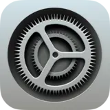
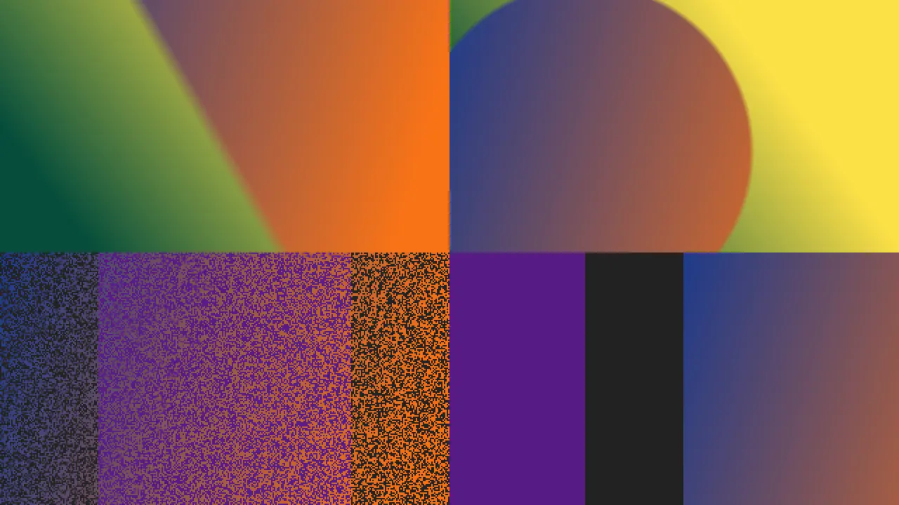
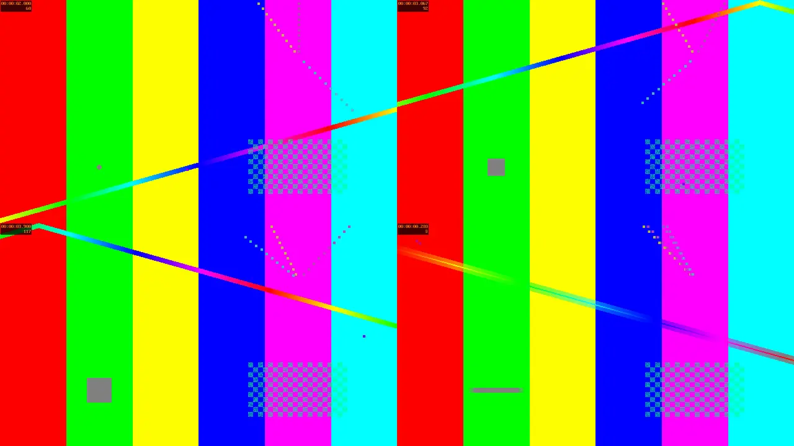

Система живёт в одной папке.
Всё лежит в /Hyprsur и разложено как на маке. Приложение это папка .app.
/Hyprsur/System/Applications
/Hyprsur/System/Library/CoreServices
/Hyprsur/Library/Preferences
Бета 0.3 для Hyprland
Рабочий стол как на Mac. Только это Linux, и всё можно открыть и поправить.
Это не видео. Нажимай на значки в доке, таскай окна за заголовок, открой Пункт управления справа вверху. Калькулятор и Терминал работают по-настоящему. Поиск: Ctrl + K.
Аксиомы
Всё остальное в проекте из них следует. Под каждым правилом стоит кусок из беты, которым его можно проверить.
Всё лежит в /Hyprsur и разложено как на маке. Приложение это папка .app.
Своих форматов конфигов нет. Запись атомарная: временный файл, потом замена.
Окна раз в секунду сверяют время изменения plist и стилей. Сменил акцент, и всё перекрасилось.
Код задаёт структуру и классы. Цвета, отступы и тени живут в style.css рядом с приложением.
Светлая, тёмная и обе без прозрачности. Каждый цвет и значок есть во всех четырёх.
Приложение оставляет сверху пустую полосу. Три кружка и стекло дорисовывает плагин Hyprland.
Pages, Numbers и Keynote честно говорят, что настоящие файлы Apple не откроют. Недоделанное называется недоделанным.
Приложения
Скриншоты сняты с программ из релиза, без монтажа. Заметки, события и напоминания на них вписаны для примера.

Система
Док, строка меню и панели рисуются слоями поверх рабочего стола. Каждая часть это отдельная программа в CoreServices.
Панели описаны в eww.yuck на 1113 строк: Wi-Fi, Bluetooth, AirDrop, звук, яркость, AirPlay и фокусирование. Вместо бинарника eww их разбирает и рисует код на Python.
;; из беты, eww.yuck (defwindow control_center :namespace "ewwblur" :geometry (geometry :x 9 :y 9 :width 380 :height 410 :anchor "top right") (box :class "glass-panel" :orientation "v" (eventbox :class "icon-button ${wifi_on ? 'on' : 'off'}" :onclick "${EWW_CMD} update wifi_on=${!wifi_on}" (image :path {wifi_on ? "./icons/wifi_on.svg" : "./icons/wifi_off.svg"}))))
Системные значки закреплены навсегда. Остальные это открытые сейчас окна и то, что ты закрепил правой кнопкой. Написан на Rust, стили лежат отдельно в styles.css.
{
"position": "top", "height": 35,
"modules-right": ["network", "pulseaudio",
"custom/search", "custom/control_center",
"custom/date", "clock"],
"clock": { "format": "{:%H:%M}" }
}Команды MenuBar reload и MenuBar kill управляют уже запущенной строкой.
Выбери тему и состояние. Так называются значки в CoreGlyphs.bundle, их там 133.
WindowManager следит за HyprsurLiquidGlass, правит hyprsur.conf и делает hyprctl reload.
WindowManager toggle WindowManager on WindowManager off
Ищет среди установленных программ по их .desktop файлам.
Открывается поверх рабочего стола, как на маке.
Рядом лежит ссылка askpass, так что его можно отдать sudo.
Устройство
Это настоящее дерево беты. Нажимай на папки и файлы.
Обои · в работе
Свой демон обоев для Wayland. Написан на Rust, код готов и ждёт слияния.
Смотреть pull request
fade, wipe, slide, grow, outer и dissolve, плюс случайный выбор. Суточный переход почти не грузит процессор и переживает перезапуск демона.

При сильном замедлении соседние кадры перетекают друг в друга, картинка не дёргается.
Картинки привязываются к времени суток, восходу и закату. Набор с мака можно забрать командой surw import-heic.
surw daemon surw img ~/walls/forest.jpg -t fade --td 2s surw video ~/walls/day.mp4 --duration 24h --sync-clock surw dynamic examples/day.toml surw import-heic Mojave.heic
В Numbers работают СУММ, СРЗНАЧ, МИН, МАКС, СЧЁТ и ОКРУГЛ, наравне с SUM и AVERAGE.
Те же, что в macOS, включая «Разноцветный» и «Графитовый». Номера совпадают с AppleAccentColor.
Считает на Decimal с точностью 30 знаков, поэтому 0,1 + 0,2 это ровно 0,3.
Заметки сами берут название из первой строки и раскладывают список по дням.
Keynote запускает слайды по Ctrl+Alt+P, листать стрелками, пробелом и кликом.
Ctrl+Shift+T открывает вкладку, Ctrl+Shift+K очищает экран, как ⌘K на маке.
App Store ставит из pacman, AUR и Flatpak. По одной задаче за раз, с прогрессом.
Заметки, напоминания и календарь лежат в домашней папке. Удаление системы их не трогает.
В Напоминаниях есть «Сегодня», «Запланировано», «С флажком» и «Завершено», считаются сами.
Версии
Нажми на любую часть номера, чтобы прочитать её.
Первый публичный архив: 12 приложений, док, строка меню, Пункт управления, Настройки с проверкой обновлений.
Демон обоев с переходами, видео и динамическими обоями. Ждёт слияния в основную ветку.
Все программы из архива запущены заново и сняты для этой страницы.
Разработчикам
HyprsurKit даёт окно без рамки, все четыре темы, акцент и автосохранение. Остальное обычный GTK 4.
#!/usr/bin/env python3 # Hello.app/Contents/MacOS/Hello import sys from pathlib import Path sys.path.insert(0, "/Hyprsur/System/Library/PrivateFrameworks/HyprsurKit") import gi gi.require_version("Gtk", "4.0") from gi.repository import Gtk from appkit import ThemedCSS, make_window RES = Path(__file__).resolve().parent.parent / "Resources" class Hello(Gtk.Application): def do_activate(self): ThemedCSS(RES / "style.css", RES) # темы и акцент, сам перечитывает win = make_window(self, "Привет", 320, 200, "hello") win.set_child(Gtk.Label(label="Привет, HyprSur")) win.present() Hello(application_id="com.example.hello").run(sys.argv)
read_plist write_plist user_data current_theme accent_hex ThemedCSS make_window tool_button Debounce open_file save_file alert
@define-color bg_1 rgba(246, 246, 246, 0.80);
@define-color bg_2 rgba(40, 40, 42, 0.78);
@define-color bg_3 rgb(246, 246, 246);
@define-color bg_4 rgb(40, 40, 42);
window.hello {
background-color: @bg_@THEME@;
color: @ACCENT@;
}<key>CFBundleIdentifier</key> <string>com.hyprsur.calculator</string> <key>CFBundleName</key> <string>Калькулятор</string> <key>CFBundleExecutable</key> <string>Calculator</string> <key>HyprsurWindowClass</key> <string>com.hyprsur.calculator</string>
Планы
Бета есть бета. Вот список того, что известно и чинится.
Демон готов и лежит в pull request. В архиве беты его ещё нет.
Код ждёт в релизе .tar.gz с install.sh, а там сейчас .zip. Обновляться пока руками.
В архиве appkit.py находится уровнем выше, чем его ищут приложения. Шаг 3 установки это исправляет.
Папки приложений есть, но внутри пока копия старого дока на Python.
У части пунктов бокового меню значков ещё нет.
App Store умеет pacman, AUR и Flatpak. На других дистрибутивах он бесполезен.
Установка
Нестабильно. Это сборка для разработчиков. Ставь на машину, которую не жалко.
sudo pacman -S --needed hyprland python python-gobject gtk4 gtk4-layer-shell vte4 unzip
Путь /Hyprsur менять нельзя, он прописан в приложениях.
curl -LO https://github.com/miramwhr/HyprSur/releases/download/BETA/Beta.Settings.15V03B00NR.zip sudo mkdir -p /Hyprsur sudo unzip -q Beta.Settings.15V03B00NR.zip -d /Hyprsur sudo chown -R "$USER": /Hyprsur
Без этого Калькулятор, Заметки, Календарь и другие простые приложения не стартуют.
cd /Hyprsur/System/Library/PrivateFrameworks cp appkit.py base.css HyprsurKit/
В Настройках вместо владельца стоит заглушка CHANGE_ME. Репозиторий проекта: miramwhr/HyprSur.
S=/Hyprsur/System/Applications/Settings.app/Contents/MacOS/Settings sed -i 's/^GITHUB_OWNER = .*/GITHUB_OWNER = "miramwhr"/; s/^GITHUB_REPO = .*/GITHUB_REPO = "HyprSur"/' "$S"
Должно открыться окно Настроек на странице «Оформление».
python3 /Hyprsur/System/Applications/Settings.app/Contents/MacOS/Settings
Добавь в ~/.config/hypr/hyprland.conf и перезайди в сессию.
exec-once = /Hyprsur/System/Library/CoreServices/MenuBar.app/Contents/MacOS/MenuBar exec-once = /Hyprsur/System/Library/CoreServices/Dock.app/Contents/MacOS/Dock
Простые приложения да: им нужны только Python, PyGObject и GTK 4. Док, строка меню и панели требуют gtk4-layer-shell и Hyprland. App Store рассчитан только на pacman.
Пока нет. Простые приложения читают переменную HYPRSUR_ROOT, но в Настройках, строке меню и Пункте управления путь вписан прямо.
Записать ключ в общий plist. Открытые окна перекрасятся сами в течение секунды.
python3 -c "import plistlib; p='/Hyprsur/Library/Preferences/.GlobalPreferences.plist'; d=plistlib.load(open(p,'rb')); d['AppleInterfaceStyle']='Dark'; plistlib.dump(d,open(p,'wb'))"
В ~/Library/Application Support, по папке на приложение: Notes/Notes.plist, Reminders/Reminders.plist, Calendar/Calendar.plist. Это обычные plist, их можно копировать между машинами.
Нет. Внутри Linux, Hyprland и GTK 4, а код написан с нуля на Python и Rust. Повторяется только вид и раскладка папок. Файлы Pages, Numbers и Keynote от Apple здесь не открываются.
Убрать две строки exec-once из hyprland.conf и стереть папку /Hyprsur. Больше система никуда ничего не ставит.